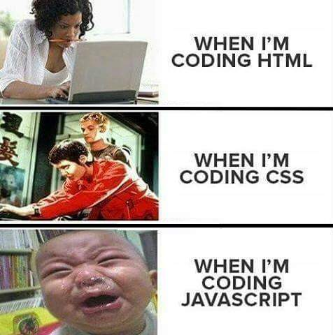

"There is also something funny about seriously discussing "I can has cheeseburger", one of the best known LOLcat memes." This quote stood out to me because even though it's funny what does this say about what our society values? It's amazing that the whole world can be in on such a small and dumb joke. Is it just the fact that it's given a huge platform that adds weight to its humor?
Will the meme culture ever die? Without social media to spread memes I don't know if they would still be able to circulate. Will social media ever die?
